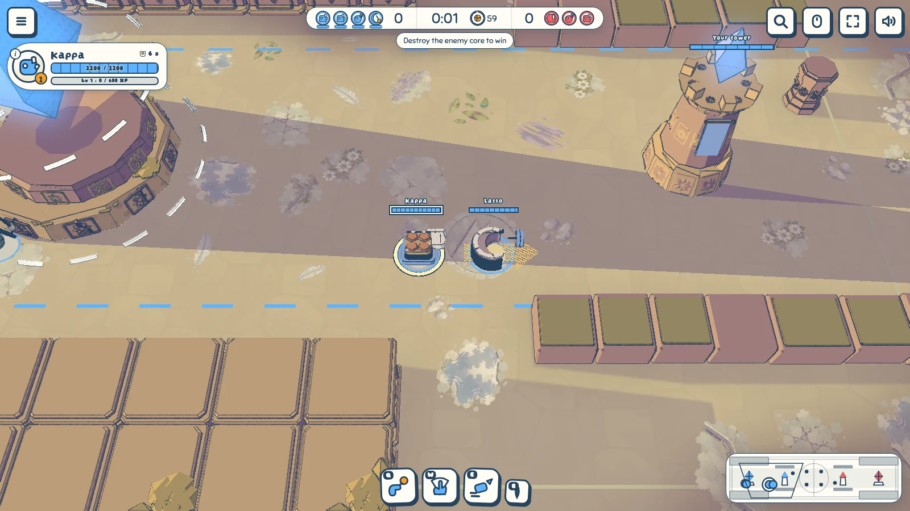
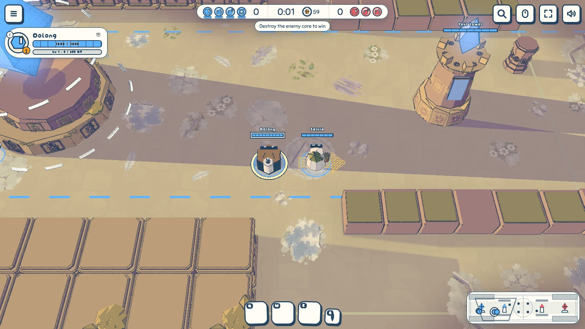
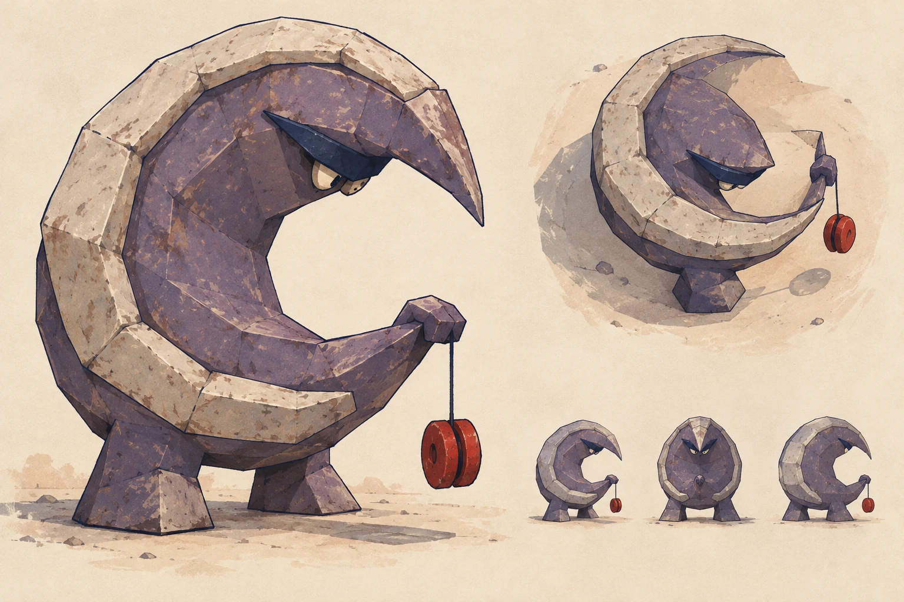
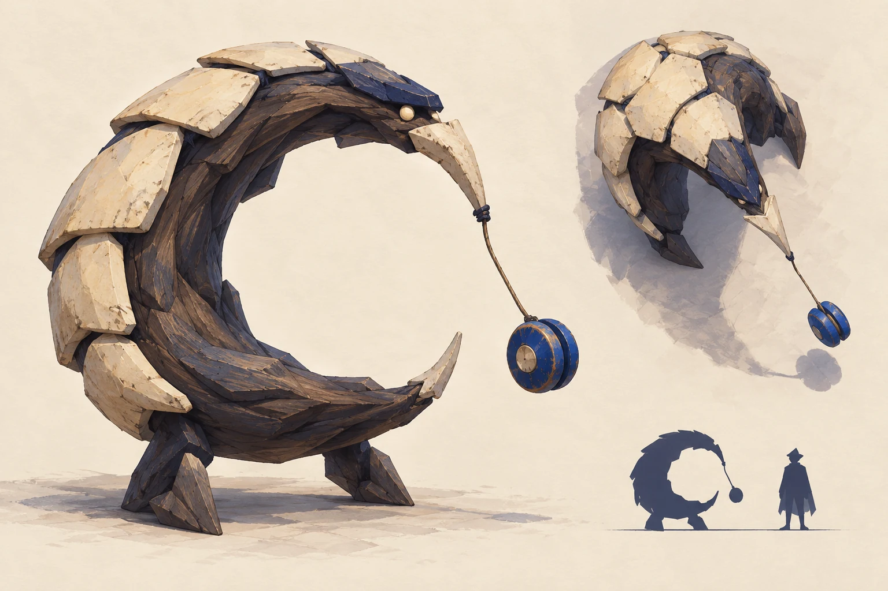
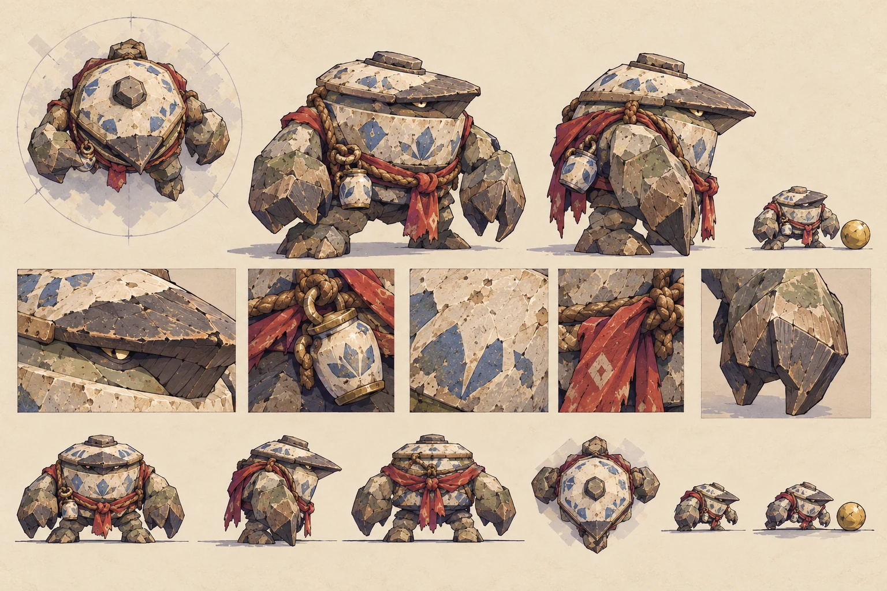
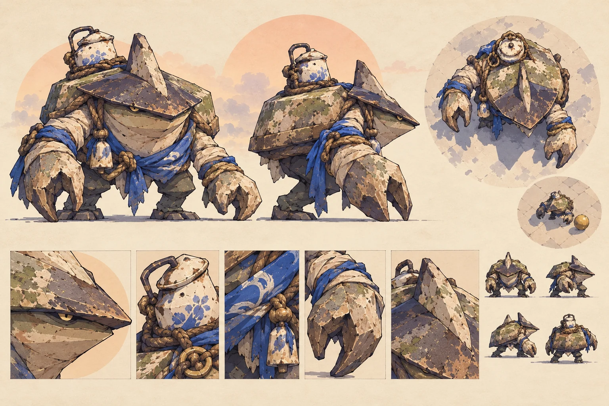
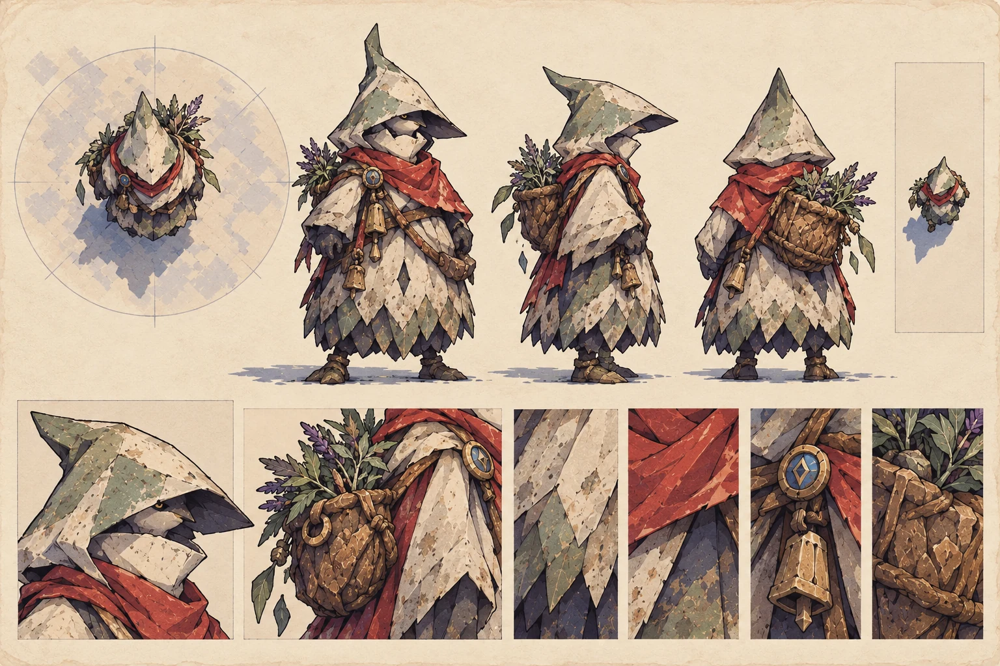
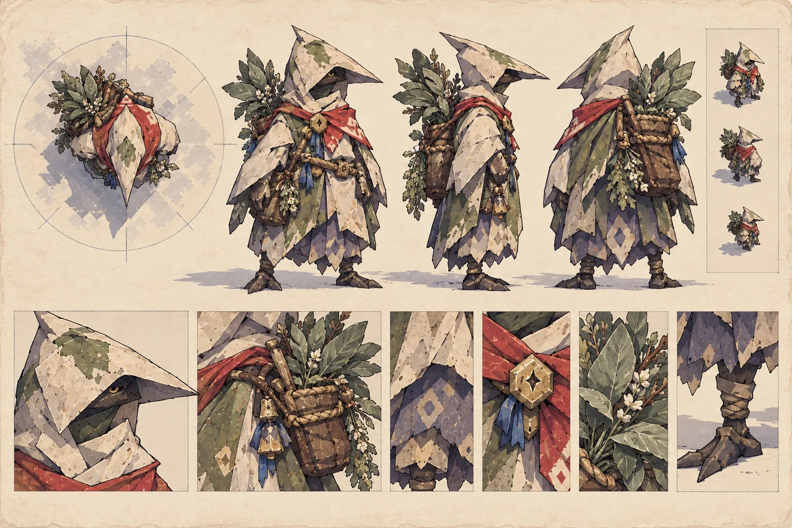

Heroes on the court
Six costumes built in the game from painted studies. The studies are directions, not game
assets; the lineups show the match camera.
 Ibis and Carambola: the hunter's beak and arrows, and the stone beak and paddle.
Ibis and Carambola: the hunter's beak and arrows, and the stone beak and paddle.

Kappa and Lasso: a keeper's worn shell and a fisherman's open crescent.

Oolong and Salvia: a wrestler's drum and a herb-gatherer's pointed hood.
The studies
Each pair shows the chosen direction first and the alternative second.
 Carambola A: a triangular stone beak and open paddle.
Carambola A: a triangular stone beak and open paddle.
 Carambola B: a darker basalt alternative.
Carambola B: a darker basalt alternative.

Lasso: pale enamel around an open crescent.

Lasso: a worn hide alternative.

Oolong B: a broad drum, heavy arms and an enamel jug.

Oolong A: a more shell-like alternative.

Salvia B: a pointed hood and a satchel of herbs.

Salvia A: a sharper, beaked alternative.